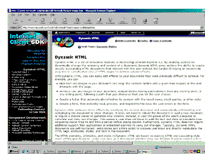

|
| ||
|
| ||
Robert Carter
MSDN Online Writer
Matt Oshry
Programmer Writer
Internet Client SDK
George Young
Web Developer Engineer
MSDN Online
August 25, 1998
Contents
From the Ground Up: Building an InetSDK Page
Building NavBar
More Special Features
DynaBinding
Event Caching
"Show Me"
And a Hack for Good Measure
Making a Hash of Things
Summary
Other parts in this series
Introduction and Overview
NavBar: Dynamic Menu Generation
NavFrame: Selective Frame Activation
For the client-side heads in the crowd, we now turn to how the InetSDK team assembles their pages. As we have intimated before, the MSDN Online and InetSDK teams have a slightly different approach to populating a Web site, which is partly due to the nature of their product, and partly due to their programming preferences.
Let us explain. As many of you are no doubt aware, the InetSDK is a collection of documents and reference materials centered around Internet Explorer. (There used to be a download as well --but we decided with this release to atomize the SDK, and let people access only what they choose.) As such, the majority of the pages the InetSDK team generates is tied to new releases of Internet Explorer. When Internet Explorer 4.0 was released, the InetSDK team was right there with its documentation; the same for Internet Explorer 5.
Between releases, however, the posting of new material slows down. There's a flurry of additions, corrections, or modifications right after release, as the InetSDK team responds to questions from visitors, but generally their posting pattern matches that of a traditional software application release.
Their Web publishing model is itself comparable to a software release. Rather than post articles individually, as MSDN Online does, the InetSDK uses a build process analogous to a compiler packaging code together. Every so often, depending on the number of files being added or modified, all the files are collected into special directories, and the Black Box (the team's name for the application that builds their pages) is cranked up to assemble all the pages en masse.
The major implication for assembling an InetSDK page on the client is that it starts in a downlevel state, and appends or replaces code to "upgrade" a page to handle the Internet Explorer 4.0 functions. So far, the only major function we've discussed that is markedly different in its construction in an InetSDK page is NavBar. The browser-sniffing code, for instance, is identical, except the sniffing is performed on the client. (If you're a stickler for details, you'll notice the variable names the respective teams use are different; nonetheless, the conditions we're testing for, and the structure of the code, are identical.) Like the MSDN Online pages, the InetSDK pages pull the code in using an include, albeit JavaScript rather than server-side.
Because we don't have the luxury of knowing a priori what type of browser we're dealing with before sending the page, we construct the downlevel NavBar first. If we find that the browser is Internet Explorer 4.0 or higher running on Windows, we bump it up to NavBar using outerHTML. But how? you ask.
First, remember that a downlevel version of NavBar is simply a one-row table with each cell populated by hyperlinked images. Note, though, that the entire table is itself enclosed in a <DIV> statement with an ID that identifies it as containing the NavBar.
<DIV ID="divSBNMenuBar"><TABLE CLASS="clsTableBP" BORDER="0" CELLPADDING="0" CELLSPACING="0" BGCOLOR="#003399" WIDTH="100%"> . . . </TABLE> </DIV>
Once the downlevel version loads completely (which we determine from an onload event inserted into the <BODY> tag, we activate a function called InitPage(). InitPage() tests to ensure we have the right type of browser (using the browser-sniff code); if so, InitPage() initiates two functions, one of which is PostGBInit().
function PostGBInit()
{
SetShowMes();
if (typeof(divSBNMenuBar) == 'object'
&& typeof(sMenuGB) == 'string')
{
divSBNMenuBar.outerHTML = sMenuGB;
bindMenus();
}
}
SetShowMes() is a special function we'll get to later. The conditional test checks that the browser did in fact load the <DIV> statement (early-generation browsers would just pass over it) and that a string object called sMenuGB is present. If the test returns true (which it should, because PostGBInit() wouldn't have even been called unless InitPage(), which was testing for Internet Explorer 4.0 on Windows, also tested true), we use the outerHTML method to replace the divSBNMenuBar <DIV> with the aformentioned sMenuGB string.
To complete the picture, the sMenuGB string encapsulates the entire Dynamic HTML (DHTML) table we discussed in the NavBar section, and is included into the page as a variable declaration in menus-gb.js. We enclose it in quotes because it's a string.
var sMenuGB = '<DIV
CLASS="clsMenu"><TABLE ID="idNavMenu"
BORDER=0
CELLPADDING=0 CELLSPACING=0>
<TR>
<TD VALIGN="middle"
CLASS="clsMenuTitleLabel">
<A href="/sitebuilder" TARGET="_top"
expNoTOC>
<IMG HEIGHT=34 WIDTH=90 BORDER=0
src="/msdn-online/shared/navbar/graphics/sbnbrand2.gif"
ALT="SBN Home">
</A>
</TD>
<TD CLASS="clsMenuTD" ALIGN="center"
VALIGN="top"><NOBR><DIV
ID="idMenuTitle1"
CLASS="clsMenuTitle"> Magazine </D
IV>
.
.
.
</DIV>'
Before you go trying this willy-nilly on your own pages, remember that you're imposing a performance hit on the page. First, the downlevel table and the sMenuGB object each loaded. Next, the code is processed to determine whether to replace the table, and finally the replacement code is loaded. On a slow connection, there may be a noticeable delay between the downlevel page loading and the "uplevel" menu becoming functional. On the other hand, if you're working in a purely client-side environment, there is no other choice. (As Matt points out, though, the performance hit for the additional code processing on the client should be balanced against the additional overhead ASP imposes on your servers, which can be increased by processing script and opening include files.)
Although it probably didn't feel like it, we simplified our discussion of NavFrame and NavBar a little. That is, we didn't discuss two special features that were going on while all the menu-building, -opening, -closing, and -coloring functions were running: event caching and DynaBinding. They work hand-in-hand in the Workshop pages. We'll discuss them here in detail.
DynaBinding was developed by George, and is a way of selectively assigning functions to events on the page (although they don't have to be assigned selectively). Here's the code:
function bindMenus() {
var cDivs = document.all.tags("DIV");
var iNumDivs = cDivs.length;
for (var i=0;i<iNumDivs;i++) {
var eTarget = cDivs[i];
if ("clsMenuTitle" == eTarget.className) {
with (eTarget) {
onmouseover = menuTitle_mouseover;
onmouseout = menuTitle_mouseout;
onclick = menuTitle_click;
onselectstart = returnFalse;
}
}
else {
if ("clsMenuItem" == eTarget.className) {
with (eTarget) {
onmouseover = menuItem_mouseover;
onmouseout = menuItem_mouseout;
onclick = menuItem_click;
onselectstart = returnFalse;
}
}
}
}
}
The net effect of this implementation of DynaBinding is to cycle through all the <DIV> tags in a page and, if they fall into one of two class types (clsMenuTitle or clsMenuItem), assign what would otherwise be standard events to specific functions that perform additional tasks. One event, onselectstart, is called directly (and not re-assigned to a more specific function) to prevent users from being able to select text within any of those elements (returnFalse).
All very well and good, you say, but what's the big deal? For one thing, if you have dynamically generated pages, and don't necessarily know what text or functions will appear on a page beforehand, DynaBinding gives you the ability to directly substitute more complex behaviors for standard events. You can assign those behaviors to a subset of elements on the page by assinging them certain class names. If you think about it a bit, DynaBinding gives you the ability to make one behavior -- say, clicking a mouse -- perform any other function instead.
It's worth noting that we did a few things to limit the impact of this function on the page's performance (which, when all is said and done, may not matter much -- but hey, we tried). We assigned the variable cDivs to just the <DIV> elements, as opposed to the much broader net of a document.all call. We also created the variable iNumDivs to fix the value for the loop in the next statement (if we just used cDivs.length in the loop, each iteration through it would require the browser to recount the number of <DIV>s again). Finally, we created the variable eTarget, and did an elegant group assignment to each selected <DIV> element using the "with" statement.
Event caching is the name we've given our practice of hijacking and limiting the functions while users work with NavBar. Matt came up with the idea as a safety precaution. It prevents actions or events on the page triggered by mouse clicks or keyboard entries from interfering with the NavBar functions, and vice versa.
We use event caching only when one of the menus is being displayed -- which means we're working with the menuTitle_click() and closeMenu() functions. The DynaBinding code above assigns all instances of the onclick event where a NavBar topic is involved to menuTitle_click().
function menuTitle_click() {
closeMenu();
var esrc = window.event.srcelement;
if (sMenuTitleDownID == eSrc.id) {
eSrc.className = "clsMenuTitleOver";
sMenuTitleDownID = "";
sMenuDownID = "";
}
else {
cacheGlobalEvents();
sMenuTitleDownID = eSrc.id;
eSrc.className = "clsMenuTitleDown";
iMenuNumber =
eSrc.id.substring(eSrc.id.length-1,eSrc.id.length);
sMenuDownID = "idMenu" + iMenuNumber;
iTop = idNavMenu.offsetTop + eSrc.offsetHeight + 23;
iLeft = idNavMenu.offsetLeft +
eSrc.parentElement.parentElement.offsetLeft + 8;
with (document.all[sMenuDownID]) {
style.top = iTop;
style.left = iLeft;
style.visibility = "visible";
}
}
}
Once menuTitle_click() has figured out that no menu was already open, and that it therefore needs to get its butt in gear and start opening one, it "captures" the four events that control NavBar's functionality. Now, if a user clicks anywhere on the page, outside of NavBar, that would otherwise trigger an event (a sound, for instance), the event will not occur. Rather, the menu will close, the functionality of the rest of the page will be restored, and then the user can play the sound by selecting the appropriate element.
function closeMenu() {
if ("" != sMenuDownID) {
document.all[sMenuDownID].style.visibility = "hidden";
uncacheGlobalEvents();
}
if ("" != sMenuTitleDownID) {
document.all[sMenuTitleDownID].className = "clsMenuTitle";
}
if ("clsMenuTitle" != window.event.srcElement.className) {
sMenuDownID = "";
sMenuTitleDownID = "";
}
}
Like DynaBinding, event caching has applicability well beyond our redesign. Any time you want to prevent multiple events from occurring simultaneously (causing both, neither, or upset stomach), you can use event caching to isolate those events from each other. In our case, we wanted to be sure that if any menu is active, none of the events that control its functioning can trigger other events on the page.
If you've spent any time with the InetSDK in the past, or have stumbled upon an InetSDK piece in the revamped Workshop, you might also have encountered one of their neatest features, although you are entirely forgiven for not realizing it as such. It's called "Show Me". It usually accompanies a code snippet that itself explains some kind of property, event, method, element, or whatever, of Internet Explorer. It presents an inviting button that, when pressed, pops up a window in which the code is demonstrated.
Figure 1. Demonstrating the "Show Me" feature of the InetSDK pages
If the function (or whatever) being discussed requires a specific version of Internet Explorer, the "Show Me" button is not visible at all. Instead, the viewer is presented with the familiar "Get Internet Explorer" logo that, if clicked, will send the user to the Internet Explorer download site.
Don't be surprised to see this function migrating to more and more MSDN Online pages (or, more accurately, servers), since it does a lot of additional processing to ensure the window that pops up is appropriate for the sample.
To insert the Show Me functionality on a page requires that you add a couple of DIVs.
<DIV>
<DIV CLASS="showme">This feature requires Internet
Explorer 4.0 or later.
Click the icon below to install the latest version.
Then reload this page to view the sample.</DIV>
<A href="/sitebuilder/ie/iedownload.htm">
<IMG MINVER=4.0
FEATURES="top=50,left=50,height=450,width=400,statusbar=yes,res
izable=1"
SAMPLEPATH="/workshop/samples/author/behaviors/hiliteA.htm"
;
SAMPLETEXT="Show me the sample."
src="/library/images/gifs/logos/ieget_animated.gif"
WIDTH=88
HEIGHT=31
ALT="Microsoft Internet Explorer"
BORDER=0>
</A>
</DIV>
As with NavBar, we assume by default that the user has an earlier or non-Internet Explorer browser, and load the download icon and the accompanying "This feature requires ..." text. Note the additional custom properties we pepper in the image tag. FEATURES, as we shall see, sets the parameters of the window that will open to display the sample; MINVER refers to the minimum browser version necessary to host the sample, and SAMPLEPATH is the URL to the page that runs the sample. We'll use those (and present some other possible expan do properties) within SetShowMes(), the function we use to determine whether to display the Internet Explorer download icon or the "Show Me" button.
SetShowMes() is called anytime the client-side browser-sniff code detects a suitable version of Internet Explorer.
function SetShowMes()
{
var oImages = document.images;
var aContainers = new Array();
// collect references to DIVs that contain qualifying IMGs
for (i = oImages.length-1; i >= 0 ; i--)
{
with (oImages[i])
{
if ((!(iMinVer = getAttribute('MINVER', 1))) ||
(g_iMaj < parseFloat(iMinVer)) ||
(!getAttribute('SAMPLEPATH', 1)) ||
(parentElement.tagName != "A") ||
(src.lastIndexOf("ieget_animated.gif") == -1)
||
(parentElement.parentElement.tagName != "DIV")
||
(parentElement.parentElement.children(0).tagName !=
"DIV")
)
{
loop;
}
else
{
aContainers[aContainers.length] =
parentElement.parentElement;
}
}
}
var sShowMeClass = "showme";
if (g_iMaj >= 5)
{
sShowMeClass += "5";
}
// walk the containing DIVs
for (i = 0; i < aContainers.length; i++)
{
with (aContainers[i])
{
// gather data
var sToolTip, sClickCode;
with (children(1).children(0))
{
var sSamplePath = SAMPLEPATH;
sToolTip = (!getAttribute('SAMPLETEXT', 1) ?
"Click here to see a demonstration of this
technology." : SAMPLETEXT);
var oReg = new RegExp("direct",
"i");
if (sSamplePath.match(oReg))
{
sClickCode = getAttribute('CODE', 1);
}
else
{
sClickCode = "window.open(+ sSamplePath
+ "+ (getAttribute('FEATURES', 1) ? ",
null, + FEATURES
+ ": "") + ")";
}
}
// change the innerHTML of the containing DIV to a BUTTON
innerHTML = '<BUTTON CLASS="' + sShowMeClass +
'" TITLE="'
+ sToolTip + '" onclick="' + sClickCode +
'">
<SPAN>Show Me</SPAN></BUTTON>';
}
}
}
First, we declare two variables: iImages will hold all the images loaded on the page, and aContainers is an array that will eventually hold all the images where "Show Me" is triggered. We run the iImages collection through a negatively incrementing loop to test for a set of conditions necessary to make the "Show Me" cut.
We do a group test using the "with" statement on each image instance. The conditions we're testing for (and we admit they're pretty persnickety) areIf the image fails any of those tests, we jump to the next image in the collection and test again. If an image successfully completes the entire battery of tests, we assign the entire <DIV> associated with that image to the aContainers array (the length attribute serves as the array counter).
Now that we've populated the aContainers array with all the valid images (actually, their associated <DIV>s), we walk through it to assign an additional set of parameters. (Because the collection will not change, we can run a positively incrementing loop.) We use two instances of the "with" statement to associate the actions with each element in the array and with its uncle (children(1).children(0)).
We assign the SAMPLEPATH property to the sSamplePath variable. Next, we check to see whether the SAMPLETEXT property is present. If it is, we assign that string to sSampleText; otherwise, we assign the default string shown. If the SAMPLEPATH expando property is set to "direct", instead of opening a new window, we execute the JScript™ code in the CODE expando declaration. We compose the sClickCode string, which gives the parameters of the window and the URL of the page containing the code. Note that we use the "?" trinary to test whether any features have been specified and, if not, provide suitable defaults. Finally, we use innerHTML to replace the downlevel icon and text with the "Show Me" button parameters.
Note also that we skipped over discussing the sShowMeClass section. That's a workaround to assign a different style to the "Show Me" button for Internet Explorer 5 users. As of this writing, Internet Explorer 5 will render some styles differently. Quel drag.
Now that we've spent some time telling you how wonderful our code is, we'll divulge some of our darker secrets. As any longtime listener knows, we're hardly immune to snafus. Our difficulties this time yield a moral for those considering partnering with other groups or thinking about using special characters in different ways than they were originally intended.
We're sure you're familiar with the hash ("#") character, known in endless voicemail systems as the pound key, in HTML as a fragment identifier or anchor, and in the Document Object Model as location.hash. It's a nice character -- and if you use it in a hyperlink followed by a few characters (inserted immediately after a URL), the link will not only pull up the requested page, but will display the section of that page that has a corresponding identifier. Simply put,
<A href=http://www.blahblahblah.com/blahblah.htm#moreblah>
will pull up the section in blahblah.htm that begins with the anchor
<A NAME="moreblah">
Better yet, if blahblah.htm is already loaded, the browser will travel to the "moreblah" hyperlink directly, without making an additional server request. That is exactly why it caused us so much trouble. But before we can tell you why, we need to give you a little context.
If you've been using SDKs for a while, you're probably used to getting them on CD-ROM, since the Web as a software distribution medium is relatively new. You can also download SDKs to store and retrieve from your local computer for viewing when you're offline.
The CD-ROM delivery criterion led the InetSDK team to embrace the file protocol as the method by which they would enable offline browsing. They required downloaders to use Internet Explorer 4.0 (or above) as a viewer. They produced all their pages in .HTM format, which, unlike ASP files, can be displayed locally without any HTTP or server processing. One more compromise, which was a slight breach of protocol (as determined by how browsers parse), was to use the "#" character instead of the "?" for passing parameters. The "?" character -- which is the accepted way to pass state information, database queries, or other non-URL material -- requires an HTTP server.
Depending on your perspective, the decision to use the hash in this manner looks either innovative or unfortunate. It's innovative because it allows us to pass state information without having to make a trip to the server; it's unfortunate because we can't cause the browser to redraw the frameset with different files inside it (as we discuss below) and we limit the number of browsers we can send the frameset to. You might ask why we didn't just set the left frame width to "0" instead of trying to eliminate the frameset entirely. Well, then we would have the classic frame favorites problem. If anybody wants to add a specific article from a frameset to their Favorites folder, they have to first be clever enough to know they're in a frameset, and then they have to right-click in the right frame (somewhere not on an image), select Properties, copy the URL into the address bar, and then bookmark (and even then, users will get the contents of one frame only, possibly lacking essential navigation). We didn't want to make that assumption of our audience, nor to place that burden on them(the next sentence was intended to state what you just added; we don't need both. We also didn't want to make it so difficult for them to remember us. And while there are other solutions, they either compromise some of the benefits that frames offer to begin with, or impose a big code burden on us.
Because they decided to use the "#" key and HTM files, all the InetSDK team had to do to make their online files readable offline was to include in the left-frame file script functions that mimicked the online functions and views.
Which was all well and good.

Figure 3. InetSDK design for Internet Explorer 4.0 release
When the MSDN Online team agreed to assume the InetSDK's frame-based navigation scheme for the redesign, the rationale was that their code was already up and running, and therefore would be easier to modify than pursuing a different method from scratch. We were wrong for several reasons.
Using the "#" character did not hurt the SDK team, because they enabled the frame-based navigation only for users of Internet Explorer 4.0 on the Windows platform. If they had tried to include Internet Explorer 3.0, their navigation would have failed, because Internet Explorer 3.0's scripting object model does not expose "#", even though it will parse it and navigate to anchors.
Even within Internet Explorer 4.0, the SDK team was not burnt by the "#" choice, because their navigation never required a reload of the frameset (the entire TOC for their site loaded in one left-frame file).
MSDN Online did not have the same luxury. While an Internet Explorer 4.0-only bias could be justified (but not applauded) for a site focused on developing Internet Explorer 4.0 applications, it is not appropriate for the MSDN Online Web Workshop. Further, the Web Workshop consists of 15 different areas (actually 16, but Design has its own, um, design) -- each with its own TOC -- and it's common to use NavBar to navigate across these areas looking for articles, so we need to re-load the left-frame file to display a different TOC quite often. (Remember that navigating through the content frame will not change the TOC because we anchor the TOC to the original article.)
That's where "#" bit us. Rather than use the "#" character to delineate an anchor within a file, we used it to pass the location of files themselves. That is, it wouldn't be uncommon to see a URL that looks like the following:
http://msdn.microsoft.com/developer/sdk/inetsdk/help /c-frame.htm #delivery/authoring/active_channels.htm
The string appearing after "#" delineates a file within a directory structure, not a point within a file. C-frame.htm uses the string after the "#" to tell it which file to load in the right frame. If that file is in the same area of the Workshop (and therefore doesn't need a new TOC to display in the left frame), fine.
But if it is in a different area (which it is in two circumstances), we're in trouble. So we have to trick it into reloading. hackURL() is the function that does the tricking, and it is called every time a menu item is clicked (from, appropriately, menuItemClick()).
function hackURL(sURL) {
dDate = new Date().getTime();
sFrameURL = sURL.substring(0,sURL.indexOf("#"));
sHash = sURL.substring(sURL.indexOf("#"));
if ("" != sFrameURL) {
if (location.protocol.indexOf("file:") > -1) sURL =
sHash.substring(1);
else sURL = sFrameURL + "?" + dDate + sHash;
}
return sURL;
}
hackURL() tricks Internet Explorer by inserting the querystring character "?" and a time stamp (which effectively serves as a random number) into the URL. The "?" string mandates a call to the server and, if necessary, a re-draw of the frameset (if there is no frameset, hackURL does nothing). We keep the "#" character in the string so all the other functions that index and parse it still function (see NavFrame: Selective Frame Activation  for more about that).
for more about that).
If you've made it through all three parts, congratulations. That's a lot of code to digest. We'll see how much of it stands the test of time. As we mention in the introductory piece to this series, we already have a bunch of improvements in the pipeline, one of which may sound the death knell of hackURL().
However, we also talked about some cool functions, too. Event caching and DynaBinding are useful in lots of applications. Database-driven sites can use DynaBinding to associate behaviors to output after the page has compiled. Using event caching, you can isolate where on a page events will fire -- which is helpful any time you've started a sequence of events you want to complete before initiating others.
Did you find this material useful? Gripes? Compliments? Suggestions for other articles? Write us!
© 1999 Microsoft Corporation. All rights reserved. Terms of use.